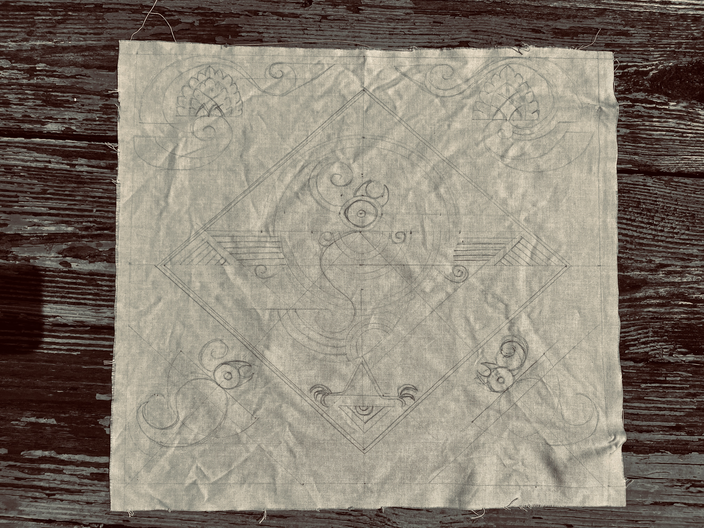
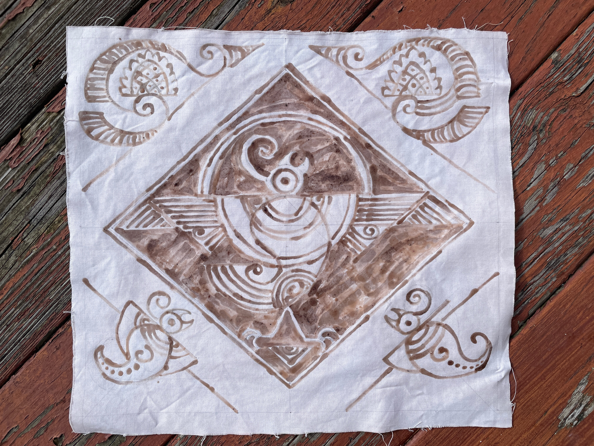
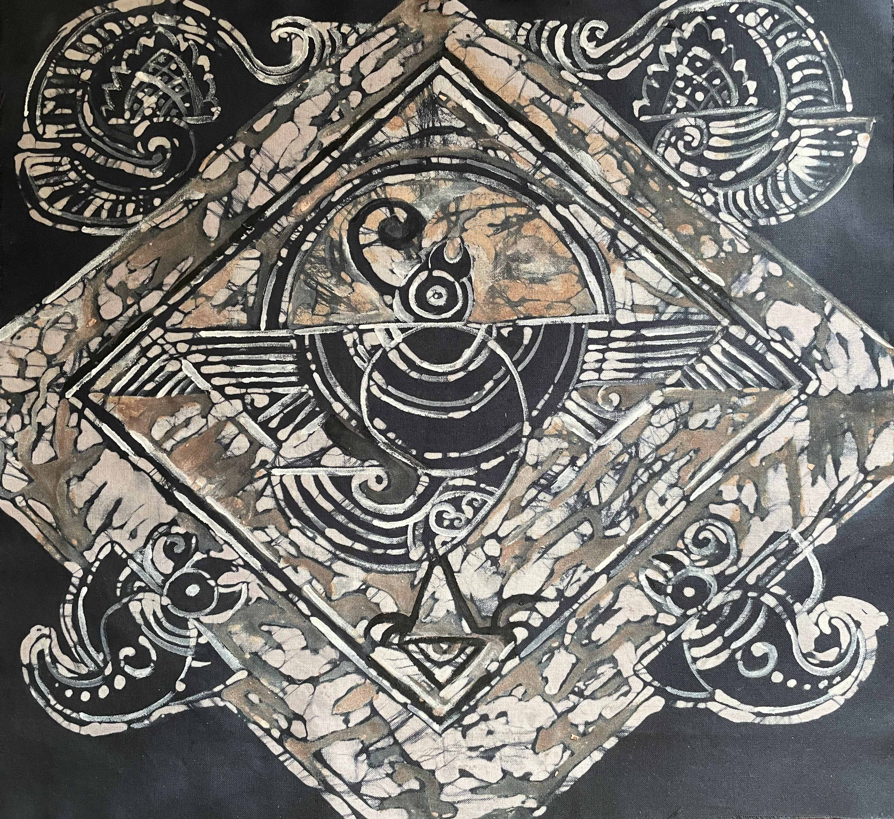
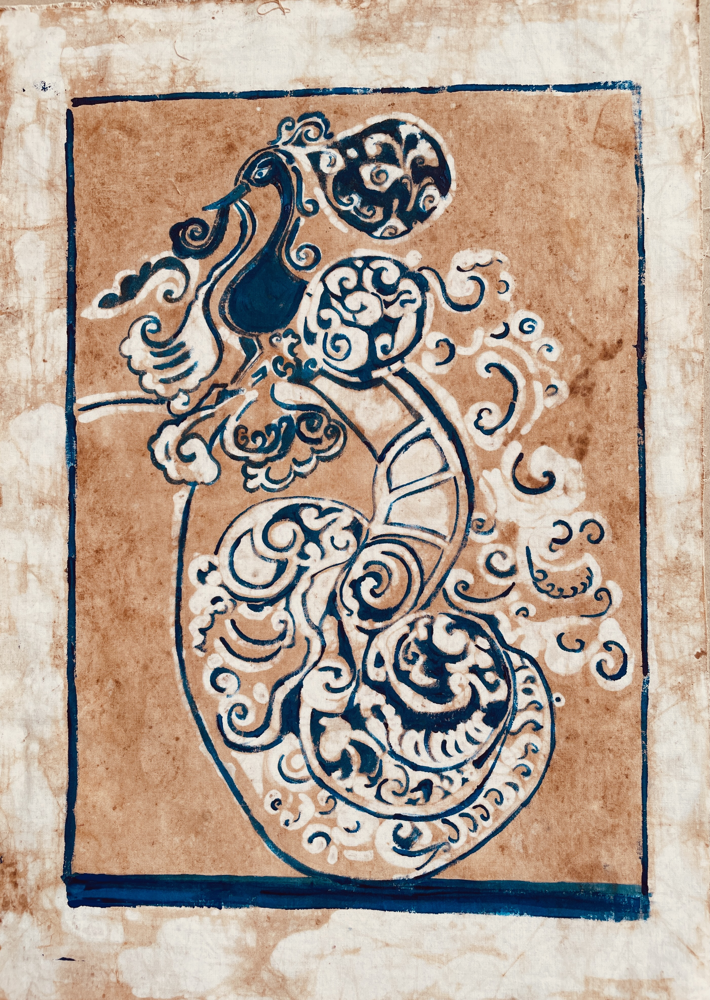

The final product. The design was conceptualized by Mr. Sudhiranjan Mukherjee. It uses forms unique to the batik industry in Java, Indonesia, and ancient China. The birds are stylized, and the wing span has geometric lines to capture the essence of its width. My implementation unfortunately lacked the use of resin, an essential component of the waxing process -- resulting in somewhat larger lines and stripes.

The design is inspired by sculptures found in Indian temples. The batik is done with vegetable colors - particularly avocado dye -- the process of which has been elaborately described in Bhavana Little Magazine Vol. 11. At high heat, the avocado dye tends to break apart, so the heat generated during the waxing process has to be carefully tuned.

Haimonti is trained as a computer scientist, and loves to read, paint, and write in her spare time.